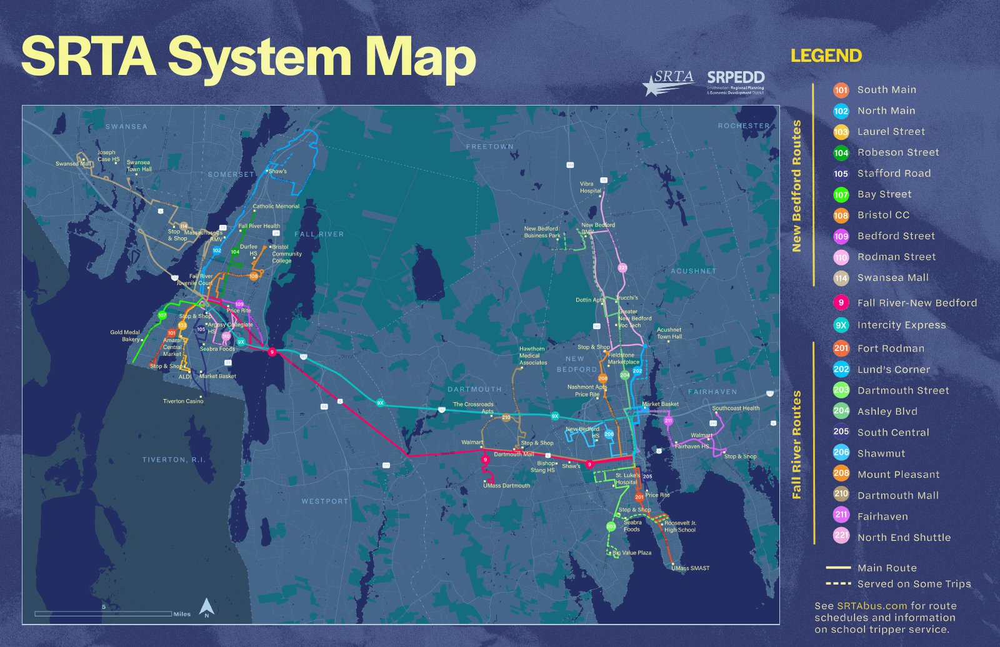
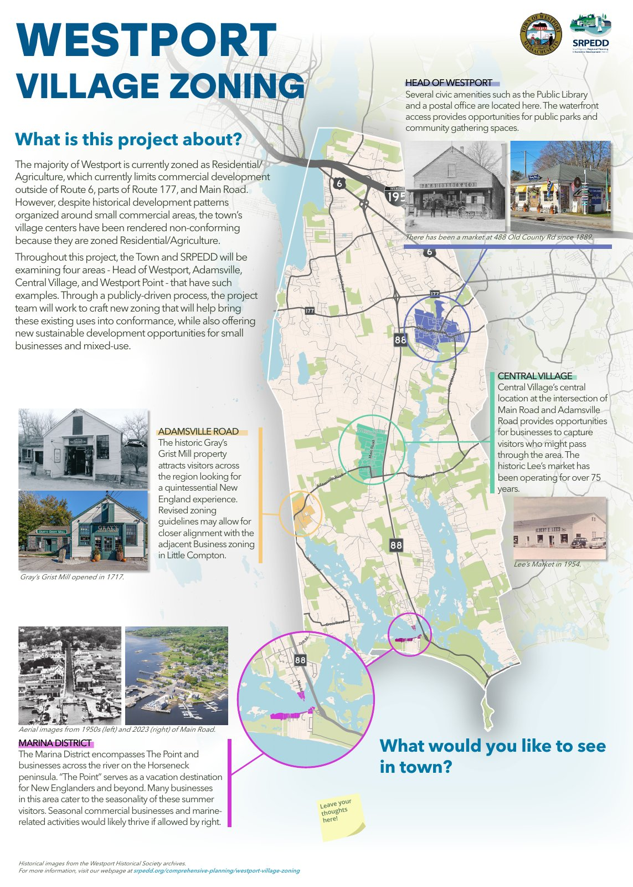
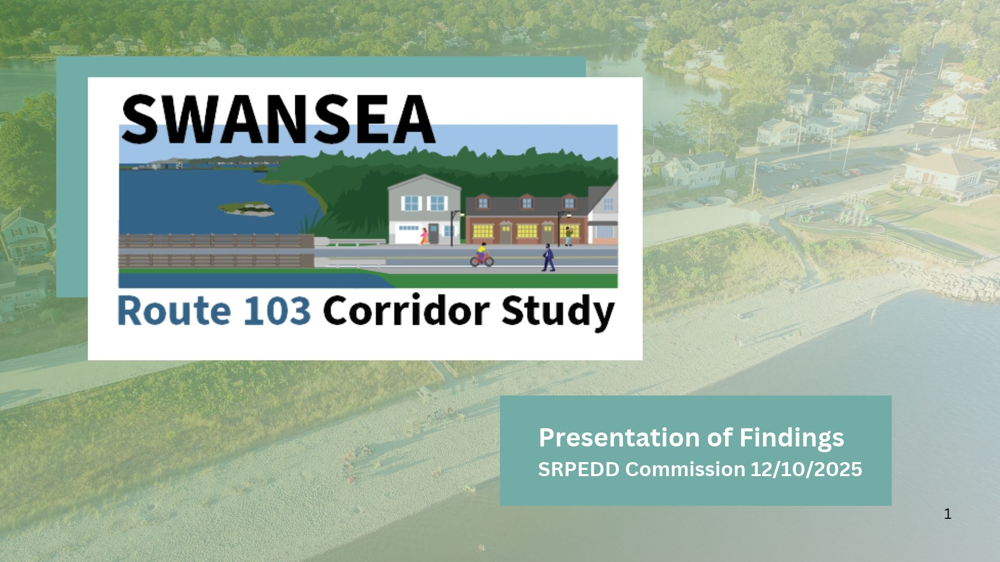
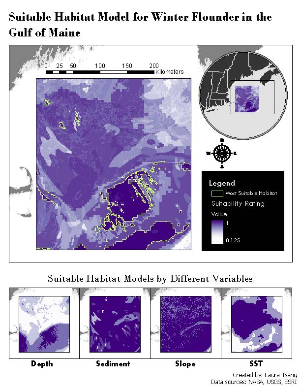
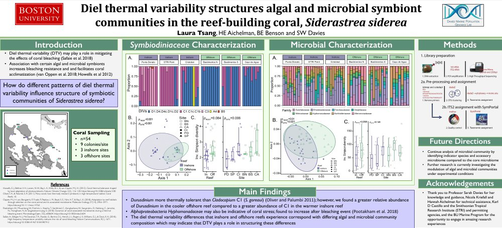

Projects
Miscellaneous planning and coding projects.
Filter by skill

SRTA fare-free transit Details
An outreach brochure created for an SRTA Fare-Free transit economic analysis study. Pamphlets used during canvassing along bus routes.
View project ↗
Westport Village Zoning Details
A poster created for informational tabling at events to support the Westport Village Zoning update project. SRPEDD was contracted to provide a zoning update to allow for mixed-use and commercial development in key areas in town.
View project ↗
Swansea Route 103 Details
The Route 103 Corridor Study was one of the first projects that I managed from start to finish. The study analyzed opportunities to create a village-style main street along one of the Town's smaller commercial corridors that passes through the densest residential area in town.
View project ↗
Winter flounder habitat suitability Details
A habitat suitability map for winter flounder in the Gulf of Maine, combining depth, sediment, slope, and sea surface temperature.
View project ↗
SICB 2021 research poster Details
A research poster on how daily temperature variability relates to algal and microbial symbiont communities in the reef-building coral Siderastrea siderea.
View project ↗Snake Details
A classic snake game. One of the first things I ever scripted.
Play Snake ↗Breakout Details
Another hand-scripted game.
Play Breakout ↗Matrix rain Details
Mostly an art experiment.
Open animation ↗Pixel art Details
Cupcake halftones Details
Took a real photo of a raspberry cupcake I made for a party and rendered into Andy-Warhol-style pixel images.
Explore the experiment ↗No projects match these filters. Try another skill or clear the filters.